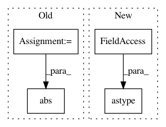

abdc942ed5132a915ca6fccc13470bdf730f1457,test/augmenters/test_color.py,,test_Grayscale,#,87
Before Change
assert np.allclose(observed, expected.astype(np.uint8))
aug = iaa.Grayscale((0.0, 1.0))
base_img = base_img[0:1, 0:1, :]
base_img_gray = iaa.Grayscale(1.0).augment_image(base_img)
distance_max = np.average(np.abs(base_img_gray.astype(np.int32) - base_img.astype(np.int32)))
nb_iterations = 1000
distances = []
for _ in sm.xrange(nb_iterations):
After Change
nb_iterations = 1000
distances = []
for _ in sm.xrange(nb_iterations):
observed = aug.augment_image(base_img).astype(np.float64) / 255.0
distance = np.linalg.norm(observed.flatten() - base_img_float.flatten()) / distance_max
distances.append(distance)
In pattern: SUPERPATTERN
Frequency: 3
Non-data size: 4
Instances
Project Name: aleju/imgaug
Commit Name: abdc942ed5132a915ca6fccc13470bdf730f1457
Time: 2019-01-28
Author: kontakt@ajung.name
File Name: test/augmenters/test_color.py
Class Name:
Method Name: test_Grayscale
Project Name: nilearn/nilearn
Commit Name: 294974e36b1c33ebfaa8ade095fcbc10ed93203e
Time: 2014-06-17
Author: gael.varoquaux@normalesup.org
File Name: nilearn/plotting/coord_tools.py
Class Name:
Method Name: find_cut_slices
Project Name: LCAV/pyroomacoustics
Commit Name: 3872c53eed54c9ee78438f58dbb8307a6df5e5ca
Time: 2017-06-22
Author: fakufaku@gmail.com
File Name: examples/stft_block_processing.py
Class Name:
Method Name: